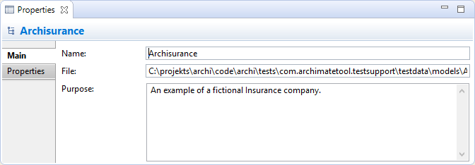

In the "Purpose" text control, URLs that start with "http://" "https://" or "ftp://" will show as a hyperlink. Pressing the Ctrl / Command key will change the cursor to a "hand" cursor and you can open the link in a Browser.
In the "Purpose" text control, URLs that start with "http://" "https://" or "ftp://" will show as a hyperlink. Pressing the Ctrl / Command key will change the cursor to a "hand" cursor and you can open the link in a Browser.Selecting the top level node for a model in the Model Tree means that you can edit or view the following properties in the Properties Window.
The Main Tab
Editing the "Main" Properties for an ArchiMate model
| Name: | The name of the ArchiMate model |
| File: | The file name of the model (read-only) |
| Purpose: | A space to enter a description of the purpose of the model |
In the "Purpose" text control, URLs that start with "http://" "https://" or "ftp://" will show as a hyperlink. Pressing the Ctrl / Command key will change the cursor to a "hand" cursor and you can open the link in a Browser.
The Properties Tab
For more information about creating and managing User Properties see User Properties.